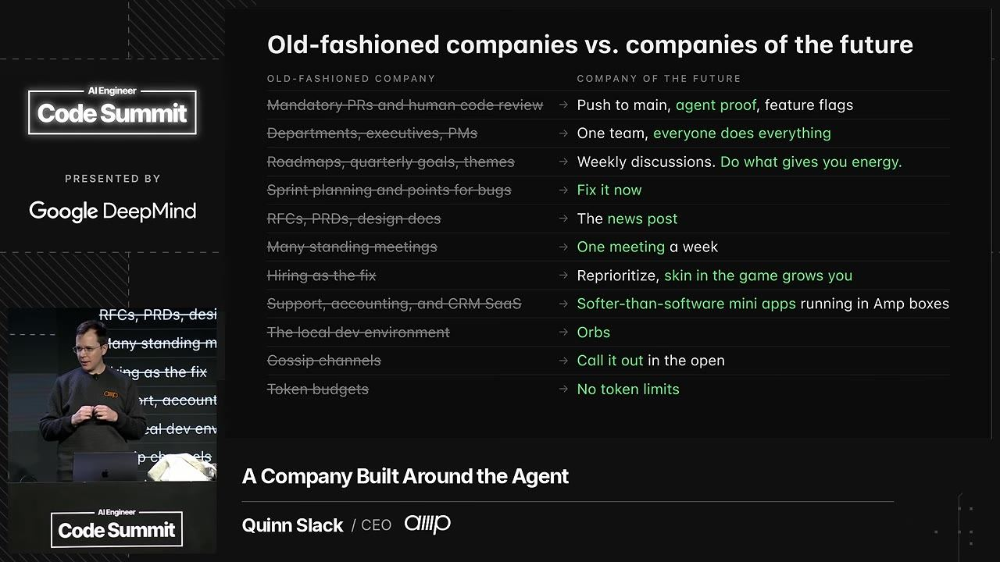
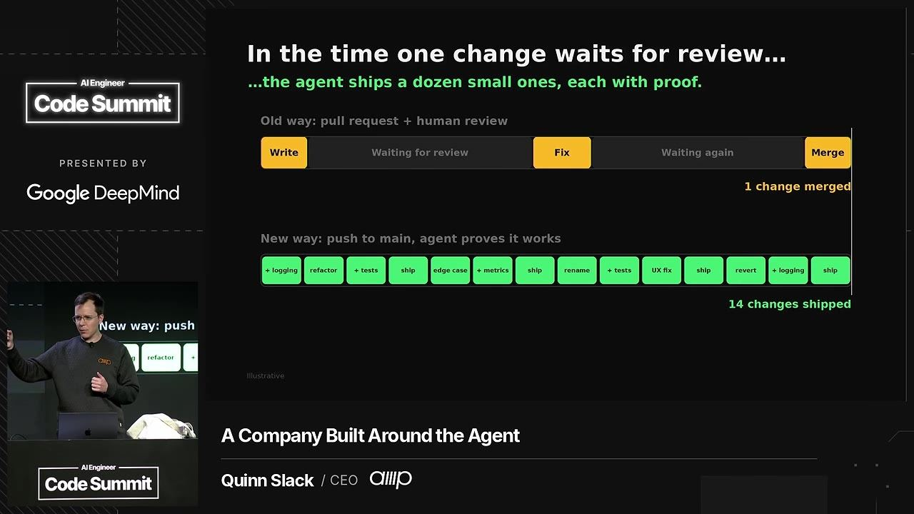
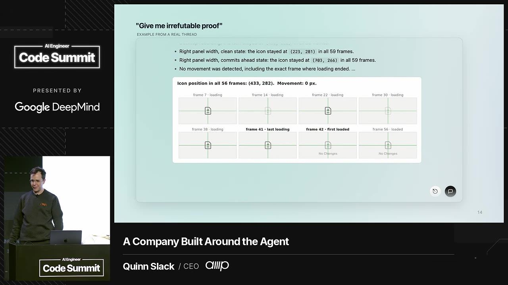
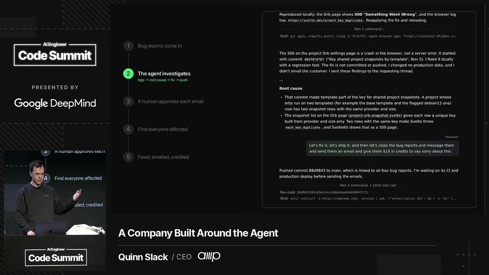
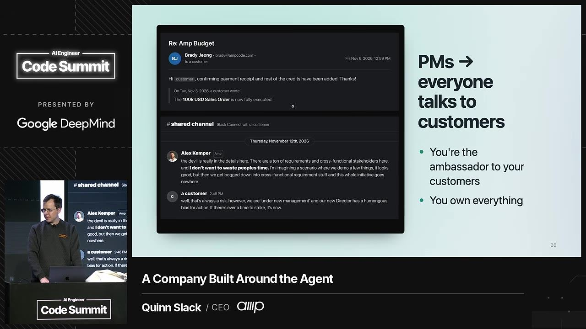

essencial do dia: Traz práticas concretas de operação com agentes, como pushes pequenos monitorados e o ciclo de bug report que avisa todos os afetados.
Como 21 pessoas operam uma empresa de agentes de US$ 100M
How 21 People Built a $100M+ Agent Company
Com agentes fazendo o trabalho, um time minúsculo sem PM, sem tracker e com pushes pequenos pode render mais que uma empresa grande.
Depois deste talk você consegue desenhar um fluxo de bug que o agente corrige e comunica aos usuários afetados, com mudanças pequenas e monitoradas
Em 3 frases
Quinn Slack conta como a Amp saiu da Sourcegraph com 21 pessoas, sem poder contratar por um ano, e foi obrigada a trabalhar dentro do agente.
O time dispensou tracker de tarefas, PMs e reuniões, e passou a subir mudanças minúsculas e monitoradas, a provar o trabalho com o agente e a fechar o ciclo de bug com e-mail aos afetados.
Ele afirma que a empresa passa de US$ 100 milhões em ARR e é 40 a 50 vezes mais eficiente, e pede que o leitor saia da jaula de empresas que não se adaptam.
Antes de ler
- Agente agent (programa de IA que executa tarefas em etapas) analogia no glossário
- Cloud agent agente na nuvem, que roda em ambiente remoto e dispara sozinho analogia no glossário
- Agente multiplayer agente compartilhado por várias pessoas do time analogia no glossário
- Pull request pedido de integração de código analogia no glossário
- Shadow deployment implantação em sombra com as mesmas entradas da produção
- Vibe coding programar descrevendo o resultado e deixando a IA escrever o código analogia no glossário
A restrição de 21 pessoas virou método
A Amp saiu da Sourcegraph e passou um ano sem poder contratar nem dar opções. Sem espaço para pull request obrigatório, reuniões ou ciclos longos de venda, o time se forçou a fazer mais com o agente. Slack diz que cada pessoa ter participação grande na empresa reforça a responsabilidade.


(ampliar imagem)Mudanças pequenas e monitoradas reduzem risco
Se uma pessoa pode subir código a qualquer hora, ela divide o trabalho em pedaços pequenos. Primeiro adiciona logs, depois uma mudança, e o agente monitora por cerca de uma hora antes da próxima. Também dá para rodar um sistema sombra ao lado do antigo e comparar resultados caso a caso.


(ampliar imagem)O agente prova o que construiu
O agente faz o que nenhum humano teria paciência de fazer, como comparar todos os quadros de uma animação para achar tremores na interface. Também gera dezenas de variações de um mesmo componente. Slack sugere pedir muitas versões de uma vez em vez de esperar o agente mudar uma coisa por vez.


(ampliar imagem)Mais 2 ideias deste talk
O ciclo do bug report até o e-mail
Quando alguém reporta um bug, o agente corrige. O sistema manda e-mail ao usuário com créditos grátis, vasculha os logs e acha os outros 17 usuários que sofreram o mesmo erro. Eles recebem aviso e desculpa por iniciativa da empresa, o que estimula mais feedback.


(ampliar imagem)Sem PMs e com uma reunião por semana
Todos falam com clientes e qualquer pessoa pode construir o que falta. Um ex-SDR criou sozinho o pagamento por transferência ACH. A única reunião é semanal e o resto segue o lema de seguir a própria energia. Slack admite que isso só funciona porque todos têm participação grande na empresa.


(ampliar imagem)O talk é depoimento do CEO e também pitch da Amp, com convite final para testar o produto. Os números de ARR e de eficiência (40 a 50 vezes) não vêm com método, fonte ou comparação. Não há dados sobre qualidade, incidentes ou rotatividade. O modelo depende de poucas pessoas muito experientes com participação alta na empresa, o que não vale para a maioria dos times.
Teste você mesmo
Responda de cabeça antes de abrir. Lembrar com esforço é o que fixa.
- lembrar Como a Amp reduz o risco de subir mudanças o tempo todo, segundo Slack?
Ver resposta
Divide o trabalho em pushes pequenos, começa por logs, deixa o agente monitorar cerca de uma hora antes da próxima mudança e roda um sistema sombra em paralelo para comparar resultados.
- aplicar Como você aplicaria o ciclo de bug report da Amp a um produto seu?
Ver resposta
Faria o agente corrigir o bug, avisaria quem reportou, buscaria nos logs outros usuários com o mesmo erro e mandaria uma mensagem proativa com desculpa e, se couber, um crédito.
- criticar Que limite há na afirmação de que a empresa é 40 a 50 vezes mais eficiente?
Ver resposta
O palestrante vende a Amp e não mostra método, base de comparação nem fonte para o número. Também não apresenta dados de qualidade ou incidentes, e o modelo depende de poucas pessoas com muita participação na empresa.
Dividir uma mudança em pushes monitorados
Você precisa de: Um repositório pessoal e um agente de código (Claude Code ou similar)
- Escolha uma mudança pequena de comportamento em um projeto seu.
- Peça ao agente um plano em três pushes, o primeiro só com logs que confirmem o entendimento do sistema.
- Execute o primeiro push e peça ao agente para ler os logs e dizer se a hipótese se confirmou.
- Faça os pushes seguintes um a um, com a mesma checagem entre eles.
Deu certo se: Cada etapa tem uma checagem registrada e você consegue reverter só o último pedaço sem desfazer o resto.
O que fazer com isso
- Escolha uma mudança que você faria de uma vez e quebre em três pushes pequenos, com logs primeiro e monitoramento entre eles.
- Peça ao agente cinco variações de uma tela ou função e compare, em vez de pedir uma e iterar.
- Escreva o fluxo de um bug report do seu projeto, da correção até avisar quem foi afetado, e veja o que um agente poderia automatizar.
- Teste ditar um prompt longo para o agente por uma semana e compare com digitar.
Conversa com outros talks
- complementa Como a Cognition multiplicou por 40 os PRs com agentes · A Cognition mede ganho de PRs com mais engenheiros; a Amp mostra o caminho inverso, segurar o time em 21 e mudar o jeito de trabalhar.
- Fim da arqueologia de agentes: threads compartilhadas · 9 nov · em comum: Agente multiplayer, Pull request
- Como criar cultura de time em volta de um agente de código · 22 nov · em comum: Agente multiplayer, Pull request
- Como gerenciar 20 agentes de código e contratar com eles · 9 nov · em comum: Cloud agent, Pull request